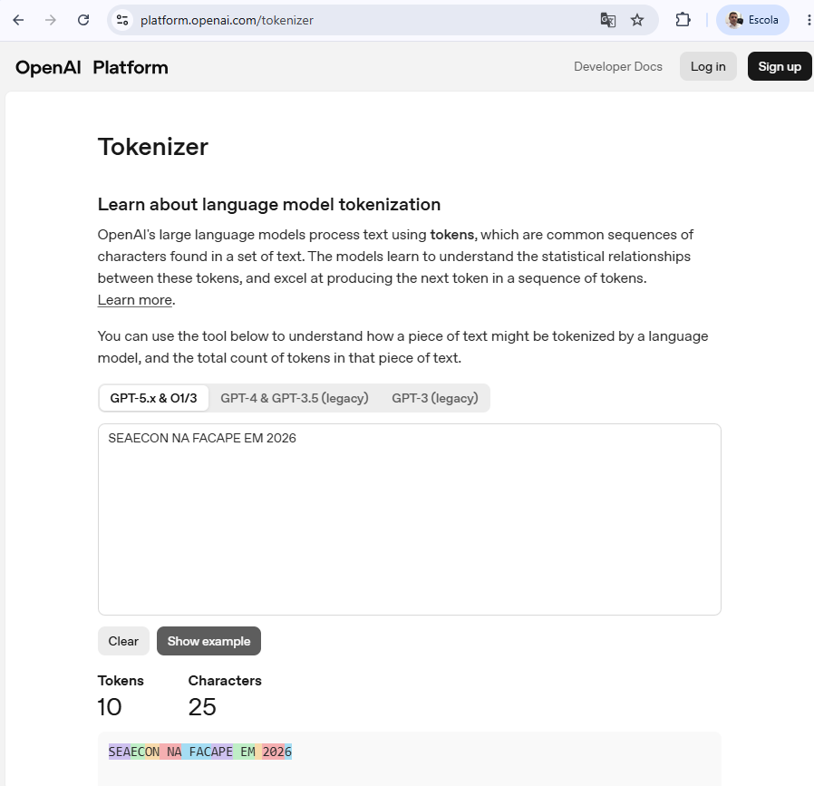
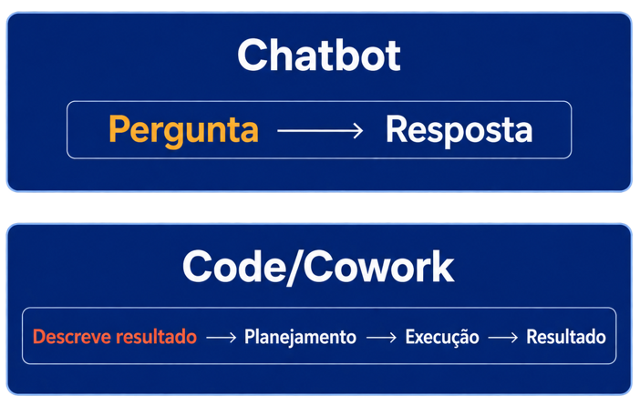
Assistente (2023-2024)
Agente (2025-2026)
O economista continua indispensável — mas em outro ponto do processo: validação e julgamento, não digitação, não para escrever código.
A automação reduz o trabalho manual, repetitivo e sujeito a erro — isso é produtividade. Mas também permite testar mais cenários no mesmo tempo, ampliando o que dá para explorar antes de decidir — isso é inteligência ampliada. É a soma das duas coisas que muda o jogo.

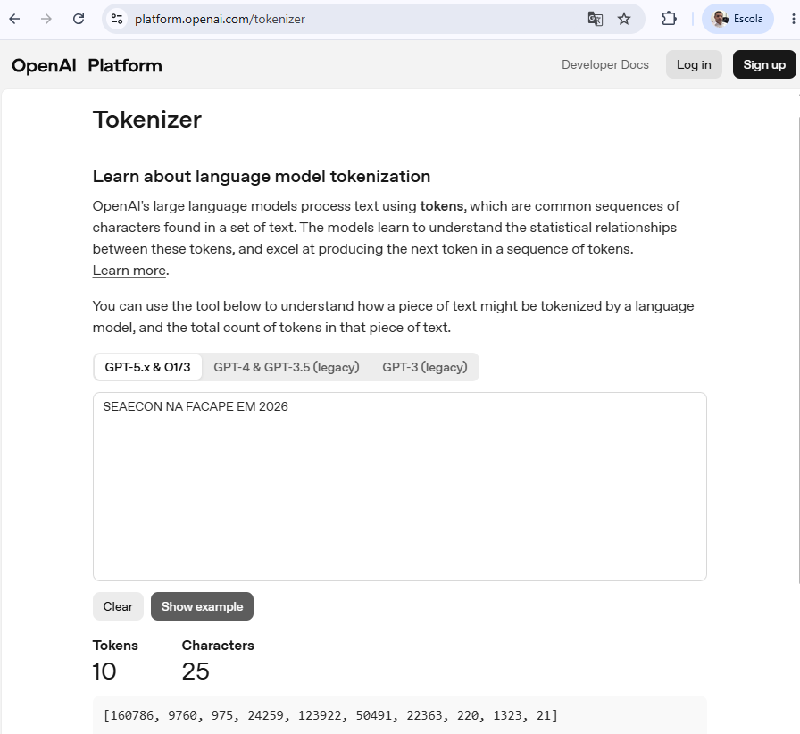
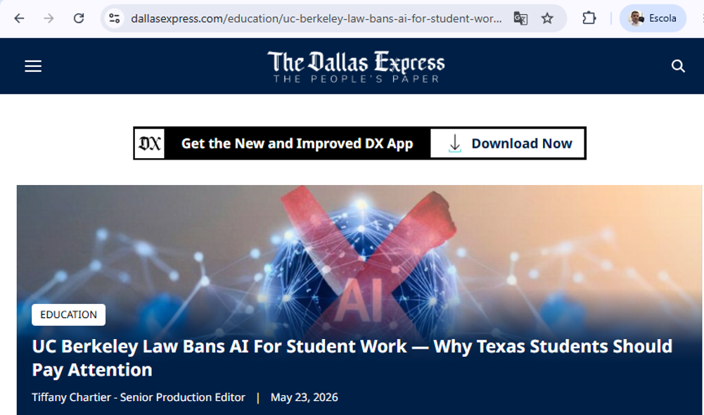
A mesma IA muda de papel dependendo de quem está do outro lado da tela:
Docente → a IA como ferramenta pedagógica versátil.
Aluno → a IA como professor particular.
Livro de macroeconomia e de economia brasileira contemporânea nunca está com o dado mais recente — o livro é publicado, o dado muda.
Resultado tradicional: professor explica um conceito atual com um exemplo de anos atrás.
Isso é ainda mais sensível em disciplinas que dependem de conjuntura: inflação, câmbio, PIB, mercado de trabalho.
💡 Exemplo de prompt para o agente de IA
“Busque a série do PIB real do Brasil (variação % ao ano) desde 1970 — use a API do SGS do Banco Central (ou IBGE/IPEADATA, caso o BCB não cubra todo o período). Baixe os dados, organize em uma tabela com ano e variação do PIB, e gere um gráfico de linha temporal. Destaque com faixas sombreadas e rótulos os seguintes períodos: Milagre Econômico (1968–1973), Década Perdida (1980–1989), Lula 1 e 2 (2003–2010), Dilma (2011–2016), Temer (2016–2018), Bolsonaro e pandemia (2019–2022), Lula 3 (2023–atual). Salve o script em R (ou Python) e exporte o gráfico em PNG com fundo transparente, pronto para o slide.”
O agente relê o próprio gráfico, encontra sozinho o problema e edita o código para corrigir.
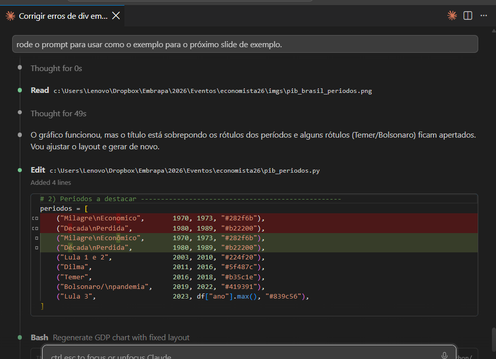
Ele roda o comando para re-renderizar a apresentação inteira e resume exatamente o que mudou.
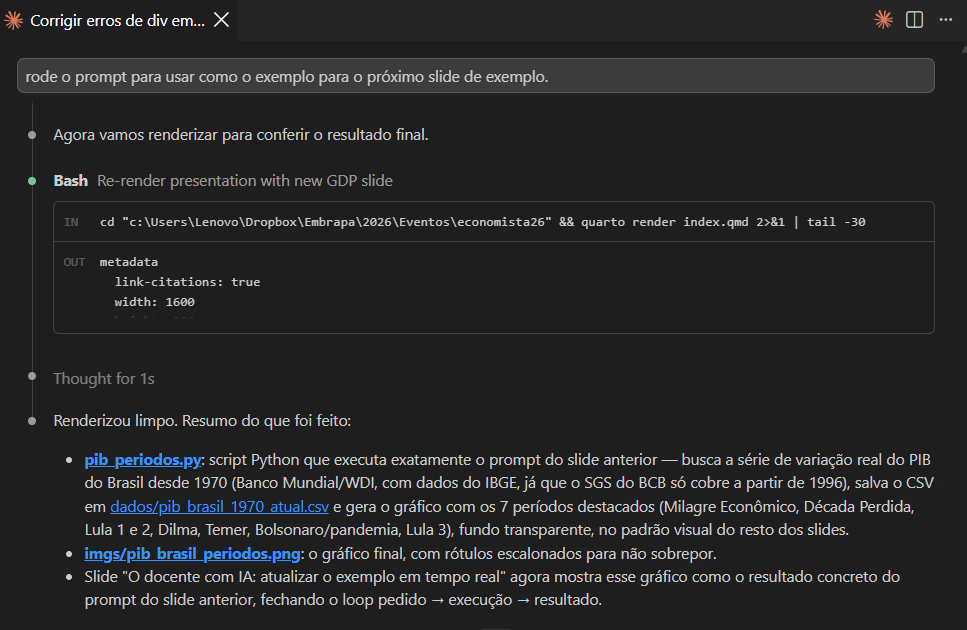
O script Python final — escrito, revisado e corrigido pelo próprio agente — salvo no projeto, pronto para rodar de novo no próximo boletim ou na próxima aula.
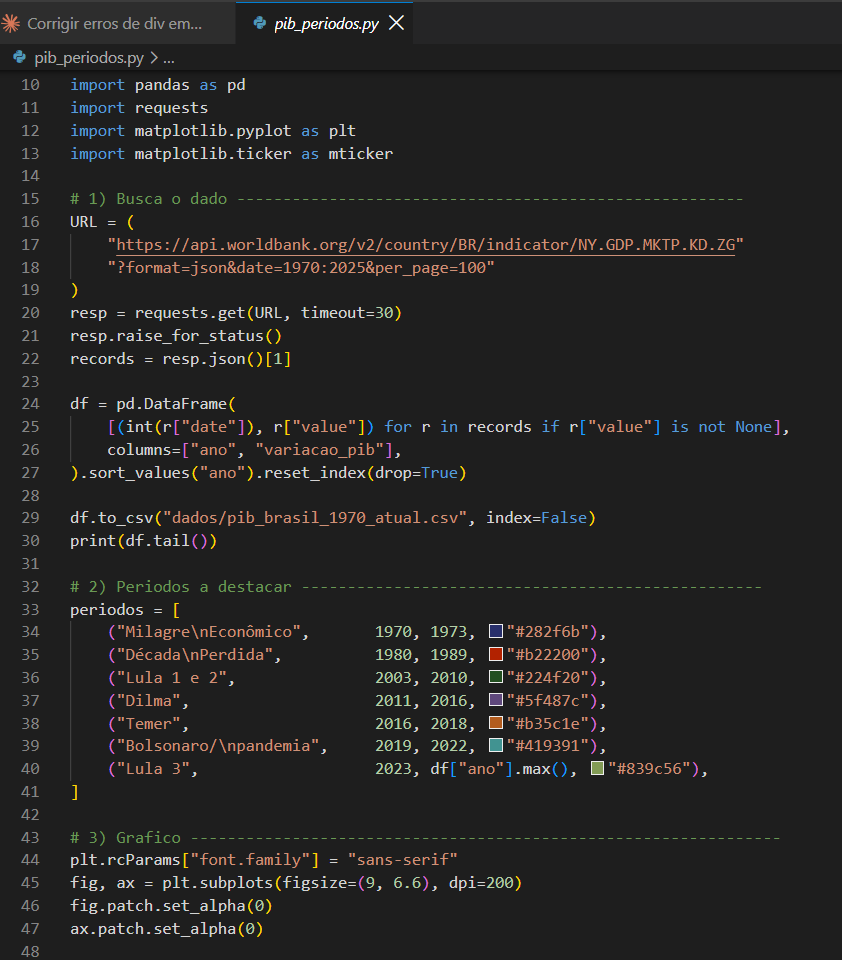
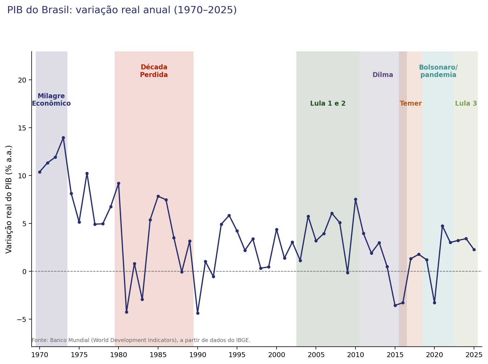
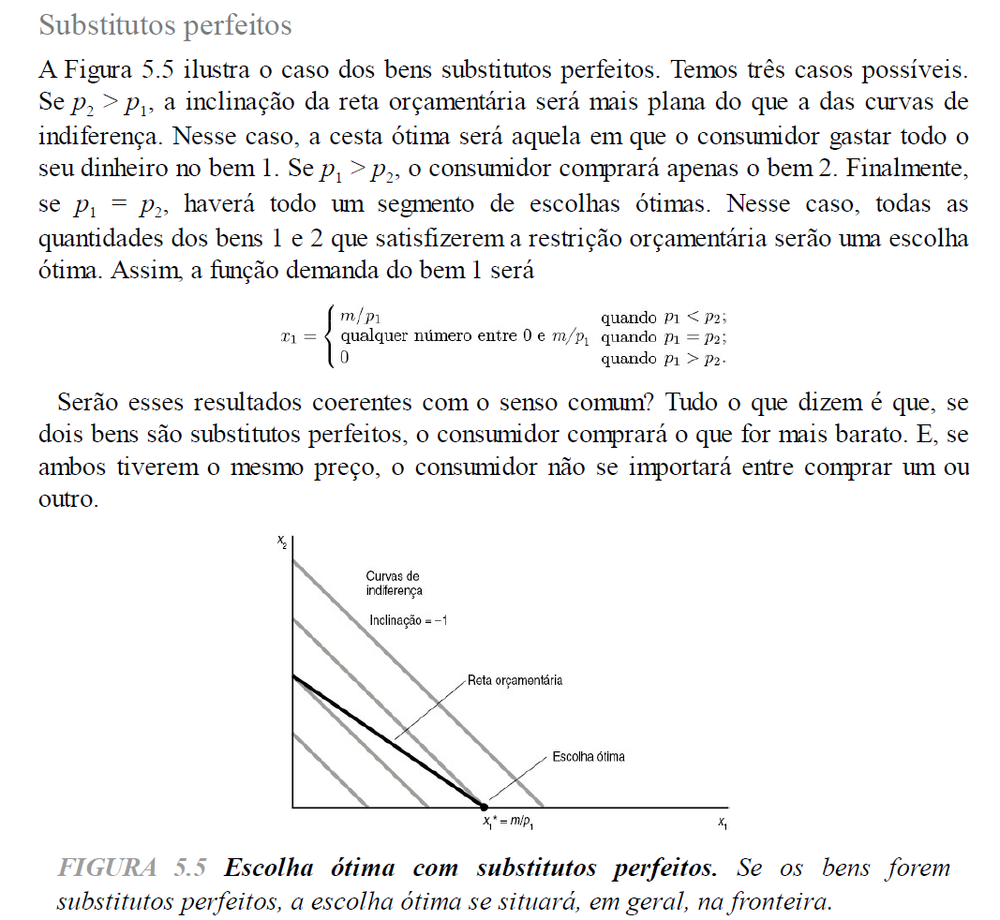
💡 Prompt do aluno
“Leia a imagem imgs/figura10.png (página de livro-texto de microeconomia, Figura 5.5, sobre bens substitutos perfeitos). Me explique em linguagem simples: (1) o que significa dizer que dois bens são substitutos perfeitos; (2) por que a escolha ótima do consumidor muda dependendo de p1 ser maior, menor ou igual a p2; (3) o que a função de demanda por partes (x1) está dizendo em cada um dos três casos; e (4) dê um exemplo do dia a dia (fora do livro) de dois bens substitutos perfeitos, relacionando com a inclinação da reta orçamentária e das curvas de indiferença no gráfico.”
✅ Resposta da IA
Professor particular também pode virar atalho para não pensar.
O ganho depende de como o aluno usa: pedir a resposta pronta x pedir para ser guiado até a resposta.
Papel do docente muda: menos “dar a resposta certa”, mais ensinar a perguntar bem e a checar o que a IA respondeu.
Em vez de exemplos genéricos, alguns casos do que venho trabalhando atualmente na FACAPE e na Embrapa:
Projeto iniciado no Colegiado de Economia da FACAPE em 2013 e tem periodicidade mensal.
Participação de professores e alunos.
Apoio institucional garantiu a coleta de dados em Petrolina/PE e Juazeiro/BA todos os meses. Apenas na pandemia em 2020 a pesquisa foi suspensa por 5 meses (março a julho).
Projeto com impacto social e com divulgação da instituição na mídia.
Trabalho de visita a 46 estabelecimentos comerciais na soma de Petrolina/PE com Juazeiro/BA, pelo menos 2 vezes no mês.
Em julho/2026 foram 1.475 informações de preços inseridos manualmente pelos alunos nas planilhas.
Checagem por amostragem das informações inseridas e por estatísticas descritivas. Alteração na quantidade e nome dos estabelecimentos comerciais gerava necessidade de alteração das fórmulas inseridas nas planilhas.
O que eu ainda faço, todo mês:
Esses três passos poderiam virar automáticos, sem precisar baixar nada manualmente.
Do resto — validar, calcular, escrever o boletim, atualizar o dashboard — quem cuida é o agente.
Um clique no gerar_boletim.ps1 roda tudo em sequência:
Antes
Hoje
valida_planilhas.py faz duas conferências, antes de qualquer conta:
Erro de estrutura é pego na validação.
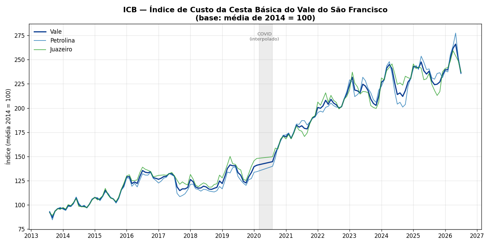
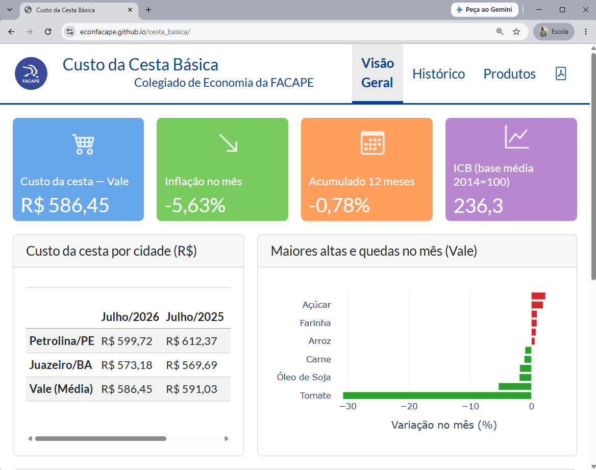
| Etapa | Antes | Agora |
|---|---|---|
| Cálculo de máx/mín/média | Fórmula na planilha, quebrava ao mudar estabelecimento | Script valida e calcula direto |
| Série histórica (desde 2013) | Montada à parte, manualmente | Reconstruída automaticamente, sem hiato |
| Índice ICB e gráfico | Não existia como rotina | Calculado e gerado todo mês |
| Boletim | Escrito e diagramado no Word | Gerado por template, .qmd → PDF |
| Consulta ao dado | Só no PDF do boletim | Dashboard público, sempre atualizado |
| Economista escreve | Todo o boletim | Só a explicação de conjuntura |
Um sinal concreto dessa transição: até abril/2026, cada boletim publicado tinha uma versão em Word por trás do PDF. A partir de maio/2026, só o PDF pelo pipeline.
Portais e sites institucionais
O problema real
Boletins e cotações por e-mail
Application Programming Interface
O problema: site sem API
A solução: reproduzir o formulário via código
Por muito tempo: alimentação manual
Consequências
Hoje: automação
Exemplo: leitura de email
Toda sexta-feira chegam boletins de preços. Com automação:
Antes: 15–20 minutos por boletim, risco de erro
Hoje: automático, auditável
| Etapa | Antes (manual) | Agora (com IA agente) |
|---|---|---|
| Coleta de dado | Baixar planilha fonte a fonte | Agente busca e organiza |
| Tratamento | Ajustar formato, mesclar bases | Agente executa o script |
| Gráfico/tabela | Montar peça a peça | Agente gera a partir do pedido |
| Análise | Escrever do zero | Economista revisa e refina |
O tempo poupado nas três primeiras linhas é reinvestido na última — que é a que exige o economista.
Menos erro, processo documentado e reproduzível — produtividade
Rigor também é saber descartar. Testado e rejeitado com evidência, não por achismo:
A hipótese, do conhecimento de mercado: quando México ou Equador têm quebra de safra por clima, a demanda dos EUA migra para o Brasil — menos fruta no mercado interno, preço sobe. Cada concorrente domina uma janela do ano:
| Semanas | Concorrente | Mercado |
|---|---|---|
| 21–31 | México | EUA |
| 38–46 | Equador | EUA |
| 47–52 e 1–20 | Peru | Europa |
| Semana-alvo | Palmer: previsto | Palmer: real | Tommy: previsto | Tommy: real |
|---|---|---|---|---|
| 03/07 | 2,81 | 2,99 ✅ | 4,68 | 5,18 ✅ |
| 17/07 | 3,21 | 3,68 ❌ | 4,29 | 4,19 ✅ |
| 31/07 | 3,82 | 3,75 ✅ | 3,15 | 2,53 ❌ |
| 07/08 | 3,77 | 3,58 ✅ | 2,04 | 3,12 ❌ |
Duas semanas acertando as duas variedades, duas semanas acertando uma e errando a outra — nunca as duas erradas ao mesmo tempo. O modelo é bom para pegar viradas (69–71% de acerto de direção), mas erra quando o preço mantém uma tendência forte — como a Palmer, que subiu direto de 2,77 para 3,80 em cinco semanas.
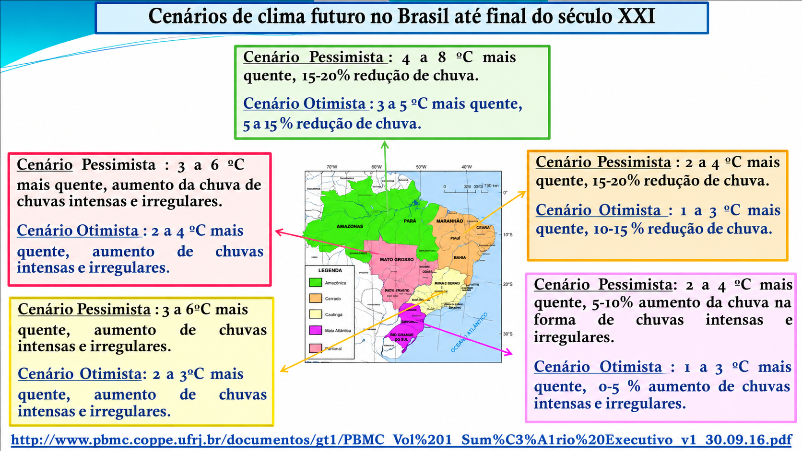
A IA não substitui o economista. Mas o economista que usa IA tende a substituir, no mercado de trabalho, o que não usa.
📲 WhatsApp Coordenação Economia:
+55 87 99135-2758